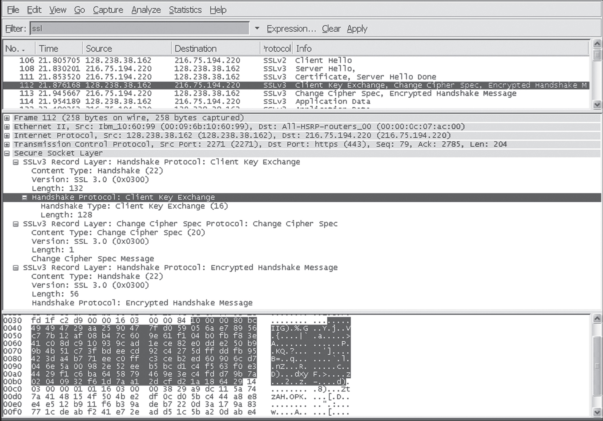

家庭作业问题和疑问#
Homework Problems and Questions
- SECTION 8.1
R1. What are the differences between message confidentiality and message integrity? Can you have confidentiality without integrity? Can you have integrity without confidentiality? Justify your answer.
R2. Internet entities (routers, switches, DNS servers, Web servers, user end systems, and so on) often need to communicate securely. Give three specific example pairs of Internet entities that may want secure communication.
- SECTION 8.2
R3. From a service perspective, what is an important difference between a symmetric-key system and a public-key system?
R4. Suppose that an intruder has an encrypted message as well as the decrypted version of that message. Can the intruder mount a ciphertext-only attack, a known-plaintext attack, or a chosen-plaintext attack?
R5. Consider an 8-block cipher. How many possible input blocks does this cipher have? How many possible mappings are there? If we view each mapping as a key, then how many possible keys does this cipher have?
R6. Suppose N people want to communicate with each of N−1 other people using symmetric key encryption. All communication between any two people, i and j, is visible to all other people in this group of N, and no other person in this group should be able to decode their communication. How many keys are required in the system as a whole? Now suppose that public key encryption is used. How many keys are required in this case?
R7. Suppose n=10,000, a=10,023, and b=10,004. Use an identity of modular arithmetic to calculate in your head (a⋅b)mod n.
R8. Suppose you want to encrypt the message 10101111 by encrypting the decimal number that corresponds to the message. What is the decimal number?
- SECTIONS 8.3–8.4
R9. In what way does a hash provide a better message integrity check than a checksum (such as the Internet checksum)?
R10. Can you “decrypt” a hash of a message to get the original message? Explain your answer. R11. Consider a variation of the MAC algorithm (Figure 8.9 ) where the sender sends (m, H(m)+s), where H(m)+s is the concatenation of H(m) and s. Is this variation flawed? Why or why not?
R12. What does it mean for a signed document to be verifiable and nonforgeable?
R13. In what way does the public-key encrypted message hash provide a better digital signature than the public-key encrypted message?
R14. Suppose certifier.com creates a certificate for foo.com. Typically, the entire certificate would be encrypted with certifier.com’s public key. True or false?
R15. Suppose Alice has a message that she is ready to send to anyone who asks. Thousands of people want to obtain Alice’s message, but each wants to be sure of the integrity of the message. In this context, do you think a MAC-based or a digital-signature-based integrity scheme is more suitable? Why?
R16. What is the purpose of a nonce in an end-point authentication protocol?
R17. What does it mean to say that a nonce is a once-in-a-lifetime value? In whose lifetime?
R18. Is the message integrity scheme based on HMAC susceptible to playback attacks? If so, how can a nonce be incorporated into the scheme to remove this susceptibility?
- SECTIONS 8.5–8.8
R19. Suppose that Bob receives a PGP message from Alice. How does Bob know for sure that Alice created the message (rather than, say, Trudy)? Does PGP use a MAC for message integrity?
R20. In the SSL record, there is a field for SSL sequence numbers. True or false? R21. What is the purpose of the random nonces in the SSL handshake?
R22. Suppose an SSL session employs a block cipher with CBC. True or false: The server sends to the client the IV in the clear.
R23. Suppose Bob initiates a TCP connection to Trudy who is pretending to be Alice. During the handshake, Trudy sends Bob Alice’s certificate. In what step of the SSL handshake algorithm will Bob discover that he is not communicating with Alice?
R24. Consider sending a stream of packets from Host A to Host B using IPsec. Typically, a new SA will be established for each packet sent in the stream. True or false?
R25. Suppose that TCP is being run over IPsec between headquarters and the branch office in Figure 8.28 . If TCP retransmits the same packet, then the two corresponding packets sent by R1 packets will have the same sequence number in the ESP header. True or false?
R26. An IKE SA and an IPsec SA are the same thing. True or false?
R27. Consider WEP for 802.11. Suppose that the data is 10101100 and the keystream is 1111000. What is the resulting ciphertext?
R28. In WEP, an IV is sent in the clear in every frame. True or false?
- SECTION 8.9
R29. Stateful packet filters maintain two data structures. Name them and briefly describe what they do.
R30. Consider a traditional (stateless) packet filter. This packet filter may filter packets based on TCP flag bits as well as other header fields. True or false?
R31. In a traditional packet filter, each interface can have its own access control list. True or false?
R32. Why must an application gateway work in conjunction with a router filter to be effective?
R33. Signature-based IDSs and IPSs inspect into the payloads of TCP and UDP segments. True or false?
Problems#
P1. Using the monoalphabetic cipher in Figure 8.3 , encode the message “This is an easy problem.” Decode the message “rmij’u uamu xyj.”
P2. Show that Trudy’s known-plaintext attack, in which she knows the (ciphertext, plaintext) translation pairs for seven letters, reduces the number of possible substitutions to be checked in the example in Section 8.2.1 by approximately 109.
P3. Consider the polyalphabetic system shown in Figure 8.4 . Will a chosen-plaintext attack that is able to get the plaintext encoding of the message “The quick brown fox jumps over the lazy dog.” be sufficient to decode all messages? Why or why not?
P4. Consider the block cipher in Figure 8.5 . Suppose that each block cipher Ti simply reverses the order of the eight input bits (so that, for example, 11110000 becomes 00001111). Further suppose that the 64-bit scrambler does not modify any bits (so that the output value of the mth bit is equal to the input value of the mth bit). (a) With n=3 and the original 64-bit input equal to 10100000 repeated eight times, what is the value of the output? (b) Repeat part (a) but now change the last bit of the original 64-bit input from a 0 to a 1. (c) Repeat parts (a) and (b) but now suppose that the 64-bit scrambler inverses the order of the 64 bits.
P5. Consider the block cipher in Figure 8.5 . For a given “key” Alice and Bob would need to keep eight tables, each 8 bits by 8 bits. For Alice (or Bob) to store all eight tables, how many bits of storage are necessary? How does this number compare with the number of bits required for a full-table 64-bit block cipher?
P6. Consider the 3-bit block cipher in Table 8.1 . Suppose the plaintext is 100100100. (a) Initially assume that CBC is not used. What is the resulting ciphertext? (b) Suppose Trudy sniffs the ciphertext. Assuming she knows that a 3-bit block cipher without CBC is being employed (but doesn’t know the specific cipher), what can she surmise? (c) Now suppose that CBC is used with IV=111. What is the resulting ciphertext?
P7. (a) Using RSA, choose p=3 and q=11, and encode the word “dog” by encrypting each letter separately. Apply the decryption algorithm to the encrypted version to recover the original plaintext message. (b) Repeat part (a) but now encrypt “dog” as one message m. P8. Consider RSA with p=5 and q=11.
What are n and z?
Let e be 3. Why is this an acceptable choice for e?
Find d such that de=1 (mod z) and d<160.
Encrypt the message m=8 using the key (n, e). Let c denote the corresponding ciphertext. Show all work. Hint: To simplify the calculations, use the fact: [ (a mod n)⋅(b mod n)]mod n=(a⋅b)modn
P9. In this problem, we explore the Diffie-Hellman (DH) public-key encryption algorithm, which allows two entities to agree on a shared key. The DH algorithm makes use of a large prime number p and another large number g less than p. Both p and g are made public (so that an attacker would know them). In DH, Alice and Bob each independently choose secret keys, SA and SB, respectively. Alice then computes her public key, TA, by raising g to SA and then taking mod p. Bob similarly computes his own public key TB by raising g to SB and then taking mod p. Alice and Bob then exchange their public keys over the Internet. Alice then calculates the shared secret key S by raising TB to SA and then taking mod p. Similarly, Bob calculates the shared key S′ by raising TA to SB and then taking mod p.
Prove that, in general, Alice and Bob obtain the same symmetric key, that is, prove S=S′.
With p = 11 and g = 2, suppose Alice and Bob choose private keys SA=5 and SB=12, respectively. Calculate Alice’s and Bob’s public keys, TA and TB. Show all work.
Following up on part (b), now calculate S as the shared symmetric key. Show all work.
Provide a timing diagram that shows how Diffie-Hellman can be attacked by a man-in- the-middle. The timing diagram should have three vertical lines, one for Alice, one for Bob, and one for the attacker Trudy.
P10. Suppose Alice wants to communicate with Bob using symmetric key cryptography using a session key \(K_S\) . In Section 8.2 , we learned how public-key cryptography can be used to distribute the session key from Alice to Bob. In this problem, we explore how the session key can be distributed—without public key cryptography—using a key distribution center (KDC). The KDC is a server that shares a unique secret symmetric key with each registered user. For Alice and Bob, denote these keys by \(K_{A-KDC}\) and \(K_{B-KDC}\) . Design a scheme that uses the KDC to distribute \(K_S\) to Alice and Bob. Your scheme should use three messages to distribute the session key: a message from Alice to the KDC; a message from the KDC to Alice; and finally a message from Alice to Bob. The first message is \(K_{A-KDC}\) (A, B). Using the notation, \(K_{A-KDC}\), \(K_{B-KDC}\), S, A, and B answer the following questions.
What is the second message?
What is the third message?
P11. Compute a third message, different from the two messages in Figure 8.8 , that has the same checksum as the messages in Figure 8.8 .
P12. Suppose Alice and Bob share two secret keys: an authentication key S1 and a symmetric encryption key S2. Augment Figure 8.9 so that both integrity and confidentiality are provided.
P13. In the BitTorrent P2P file distribution protocol (see Chapter 2 ), the seed breaks the file into blocks, and the peers redistribute the blocks to each other. Without any protection, an attacker can easily wreak havoc in a torrent by masquerading as a benevolent peer and sending bogus blocks to a small subset of peers in the torrent. These unsuspecting peers then redistribute the bogus blocks to other peers, which in turn redistribute the bogus blocks to even more peers. Thus, it is critical for BitTorrent to have a mechanism that allows a peer to verify the integrity of a block, so that it doesn’t redistribute bogus blocks. Assume that when a peer joins a torrent, it initially gets a .torrent file from a fully trusted source. Describe a simple scheme that allows peers to verify the integrity of blocks.
P14. The OSPF routing protocol uses a MAC rather than digital signatures to provide message integrity. Why do you think a MAC was chosen over digital signatures?
P15. Consider our authentication protocol in Figure 8.18 in which Alice authenticates herself to Bob, which we saw works well (i.e., we found no flaws in it). Now suppose that while Alice is authenticating herself to Bob, Bob must authenticate himself to Alice. Give a scenario by which Trudy, pretending to be Alice, can now authenticate herself to Bob as Alice. (Hint: Consider that the sequence of operations of the protocol, one with Trudy initiating and one with Bob initiating, can be arbitrarily interleaved. Pay particular attention to the fact that both Bob and Alice will use a nonce, and that if care is not taken, the same nonce can be used maliciously.)
P16. A natural question is whether we can use a nonce and public key cryptography to solve the end-point authentication problem in Section 8.4 . Consider the following natural protocol: (1) Alice sends the message “I am Alice” to Bob. (2) Bob chooses a nonce, R, and sends it to Alice. (3) Alice uses her private key to encrypt the nonce and sends the resulting value to Bob. (4) Bob applies Alice’s public key to the received message. Thus, Bob computes R and authenticates Alice.
Diagram this protocol, using the notation for public and private keys employed in the textbook.
Suppose that certificates are not used. Describe how Trudy can become a “woman-in- the-middle” by intercepting Alice’s messages and then pretending to be Alice to Bob.
P17. Figure 8.19 shows the operations that Alice must perform with PGP to provide confidentiality, authentication, and integrity. Diagram the corresponding operations that Bob must perform on the package received from Alice.
P18. Suppose Alice wants to send an e-mail to Bob. Bob has a public-private key pair (KB+,KB−), and Alice has Bob’s certificate. But Alice does not have a public, private key pair. Alice and Bob (and the entire world) share the same hash function H(⋅).
In this situation, is it possible to design a scheme so that Bob can verify that Alice created the message? If so, show how with a block diagram for Alice and Bob.
Is it possible to design a scheme that provides confidentiality for sending the message from Alice to Bob? If so, show how with a block diagram for Alice and Bob.
P19. Consider the Wireshark output below for a portion of an SSL session.
Is Wireshark packet 112 sent by the client or server?
What is the server’s IP address and port number?
Assuming no loss and no retransmissions, what will be the sequence number of the next TCP segment sent by the client?
How many SSL records does Wireshark packet 112 contain?
Does packet 112 contain a Master Secret or an Encrypted Master Secret or neither?
Assuming that the handshake type field is 1 byte and each length field is 3 bytes, what are the values of the first and last bytes of the Master Secret (or Encrypted Master Secret)?
The client encrypted handshake message takes into account how many SSL records?
The server encrypted handshake message takes into account how many SSL records?
P20. In Section 8.6.1 , it is shown that without sequence numbers, Trudy (a woman-in-the middle) can wreak havoc in an SSL session by interchanging TCP segments. Can Trudy do something similar by deleting a TCP segment? What does she need to do to succeed at the deletion attack? What effect will it have?

(Wireshark screenshot reprinted by permission of the Wireshark Foundation.)
P21. Suppose Alice and Bob are communicating over an SSL session. Suppose an attacker, who does not have any of the shared keys, inserts a bogus TCP segment into a packet stream with correct TCP checksum and sequence numbers (and correct IP addresses and port numbers). Will SSL at the receiving side accept the bogus packet and pass the payload to the receiving application? Why or why not?
P22. The following true/false questions pertain to Figure 8.28 .
When a host in 172.16.1/24 sends a datagram to an Amazon.com server, the router R1 will encrypt the datagram using IPsec.
When a host in 172.16.1/24 sends a datagram to a host in 172.16.2/24, the router R1 will change the source and destination address of the IP datagram.
Suppose a host in 172.16.1/24 initiates a TCP connection to a Web server in 172.16.2/24. As part of this connection, all datagrams sent by R1 will have protocol number 50 in the left-most IPv4 header field.
Consider sending a TCP segment from a host in 172.16.1/24 to a host in 172.16.2/24. Suppose the acknowledgment for this segment gets lost, so that TCP resends the segment. Because IPsec uses sequence numbers, R1 will not resend the TCP segment.
P23. Consider the example in Figure 8.28 . Suppose Trudy is a woman-in-the-middle, who can insert datagrams into the stream of datagrams going from R1 and R2. As part of a replay attack, Trudy sends a duplicate copy of one of the datagrams sent from R1 to R2. Will R2 decrypt the duplicate datagram and forward it into the branch-office network? If not, describe in detail how R2 detects the duplicate datagram.
P24. Consider the following pseudo-WEP protocol. The key is 4 bits and the IV is 2 bits. The IV is appended to the end of the key when generating the keystream. Suppose that the shared secret key is 1010. The keystreams for the four possible inputs are as follows:
101000: 0010101101010101001011010100100 …
101001: 1010011011001010110100100101101 …
101010: 0001101000111100010100101001111 …
101011: 1111101010000000101010100010111 …
Suppose all messages are 8 bits long. Suppose the ICV (integrity check) is 4 bits long, and is calculated by XOR-ing the first 4 bits of data with the last 4 bits of data. Suppose the pseudo- WEP packet consists of three fields: first the IV field, then the message field, and last the ICV field, with some of these fields encrypted.
We want to send the message m=10100000 using the IV=11 and using WEP. What will be the values in the three WEP fields?
Show that when the receiver decrypts the WEP packet, it recovers the message and the ICV.
Suppose Trudy intercepts a WEP packet (not necessarily with the IV=11) and wants to modify it before forwarding it to the receiver. Suppose Trudy flips the first ICV bit. Assuming that Trudy does not know the keystreams for any of the IVs, what other bit(s) must Trudy also flip so that the received packet passes the ICV check?
Justify your answer by modifying the bits in the WEP packet in part (a), decrypting the resulting packet, and verifying the integrity check.
P25. Provide a filter table and a connection table for a stateful firewall that is as restrictive as possible but accomplishes the following:
Allows all internal users to establish Telnet sessions with external hosts.
Allows external users to surf the company Web site at 222.22.0.12.
But otherwise blocks all inbound and outbound traffic.
The internal network is 222.22/16. In your solution, suppose that the connection table is currently caching three connections, all from inside to outside. You’ll need to invent appropriate IP addresses and port numbers.
P26. Suppose Alice wants to visit the Web site activist.com using a TOR-like service. This service uses two non-colluding proxy servers, Proxy1 and Proxy2. Alice first obtains the certificates (each containing a public key) for Proxy1 and Proxy2 from some central server. Denote K1+(),K2+(),K1−(), and K2−() for the encryption/decryption with public and private RSA keys.
Using a timing diagram, provide a protocol (as simple as possible) that enables Alice to establish a shared session key S1 with Proxy1. Denote S1(m) for encryption/decryption of data m with the shared key S1.
Using a timing diagram, provide a protocol (as simple as possible) that allows Alice to establish a shared session key S2 with Proxy2 without revealing her IP address to Proxy2.
Assume now that shared keys S1 and S2 are now established. Using a timing diagram, provide a protocol (as simple as possible and not using public-key cryptography) that allows Alice to request an html page from activist.com without revealing her IP address to Proxy2 and without revealing to Proxy1 which site she is visiting. Your diagram should end with an HTTP request arriving at activist.com.